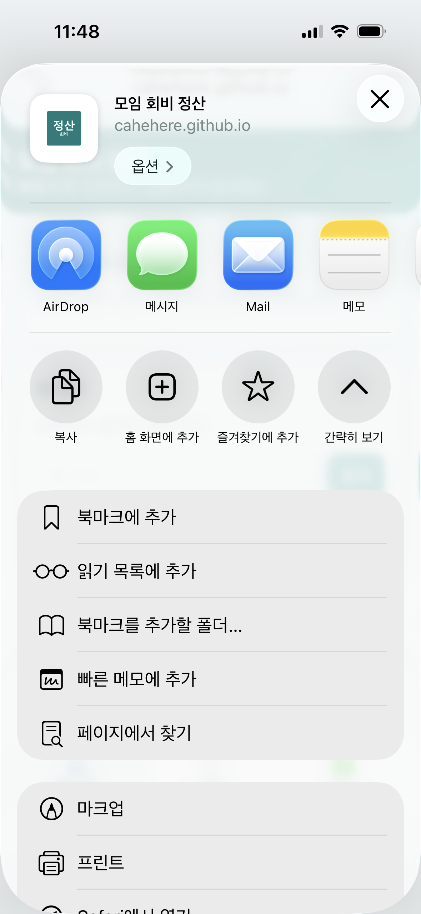
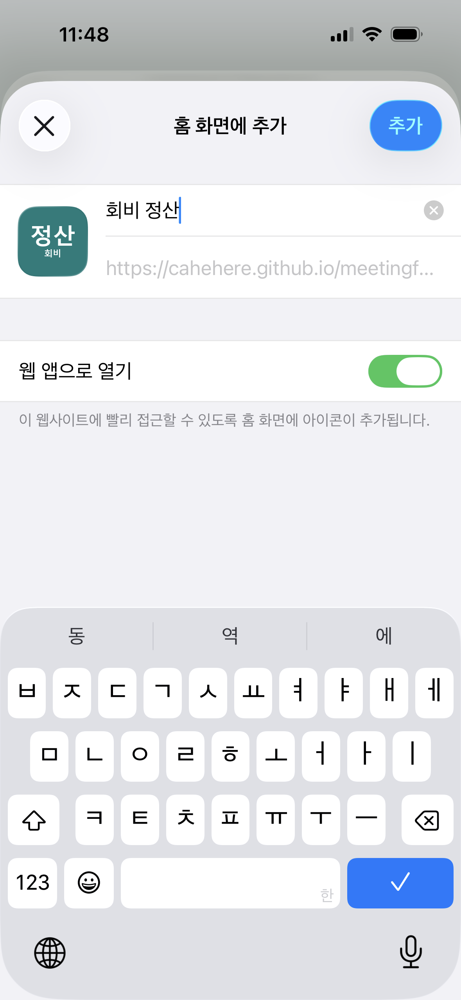

모임 회비 정산 사용설명서
코딩을 몰라도 따라 할 수 있어요
1. 이 앱은 무엇을 해 주나요?
여러 사람이 번갈아 낸 모임 비용을 계산합니다.
참가자별 부담 금액과 실제로 낸 금액을 비교합니다.
누가 누구에게 얼마를 보내야 하는지 알려줍니다.
2. 설치 방법
아이폰(Safari)
1Safari에서 앱 주소를 엽니다.
2공유 버튼을 누릅니다.
3홈 화면에 추가 → 추가를 누릅니다.

Safari 공유 메뉴에서 ‘홈 화면에 추가’를 선택합니다.

이름을 확인하고 ‘웹 앱으로 열기’를 켠 뒤 ‘추가’를 누릅니다.
카카오톡이나 Google 앱 안에서 열었다면 먼저 ‘Safari에서 열기’를 누르세요. 메뉴에 없으면 아래로 내려 ‘동작 편집’에서 추가할 수 있습니다.
안드로이드(Chrome)
1Chrome에서 앱 주소를 엽니다.
2오른쪽 위 점 3개 → 앱 설치를 누릅니다.
안드로이드 Chrome 화면 캡처는 준비되면 이 자리에 추가합니다.
3. 사용 순서
- 참가자: 모임 사람의 별칭을 추가합니다.
- 지출: 항목·낸 사람·금액을 입력하고 참여자를 체크합니다.
- 정산: 받을 돈·보낼 돈과 송금 안내를 확인합니다.
- 결과 공유: 공유 버튼을 눌러 카카오톡이나 문자로 보냅니다.
4. 일부만 참여한 지출
택시를 2명만 탔다면 지출에서 택시비를 입력하고, 실제로 탄 2명만 체크하세요. 체크하지 않은 사람에게는 그 지출이 계산되지 않습니다.
5. 계산 방법
- 지출 금액을 참여자 수로 나눕니다.
- 원 단위에서 내림합니다.
- 남은 1원은 결제자의 부담에 더합니다.
- 실제로 낸 금액에서 부담 금액을 뺍니다.
- 받을 사람과 보낼 사람을 짝지어 송금 목록을 만듭니다.
예: 40,000원을 3명이 나누면 13,333원·13,333원·13,334원입니다.
6. 꼭 알아두세요
- 참가자는 별칭만 입력하세요.
- 실명·전화번호·계좌번호는 입력하지 않습니다.
- 계좌번호는 앱이 아닌 다른 방법으로 따로 전달하세요.
- 기록은 이 휴대폰의 브라우저 안에만 저장됩니다.
- 브라우저 기록을 삭제하면 저장 내용이 사라질 수 있습니다.
7. 앱 주소를 QR코드로 나누기
- QR코드 생성 사이트를 엽니다.
- 앱 주소를 입력합니다.
- QR코드를 저장하거나 캡처합니다.
- 모임 단체 채팅방에 이미지로 공유합니다.
https://cahehere.github.io/meetingfee/
QR코드에는 앱 주소만 넣고 계좌번호나 개인 기록은 넣지 마세요.